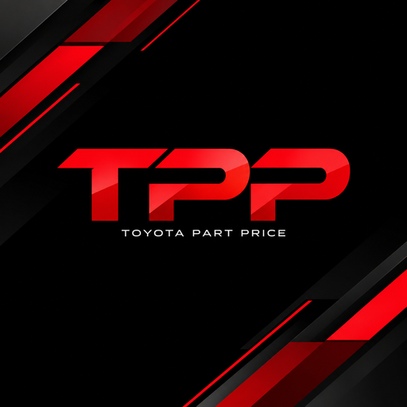

Toyota Parts Price
Akses cepat harga & data genuine parts Toyota untuk jaringan TASTI
Download di Google Play
Fitur utama
Part Price
Cari part per nomor/nama + harga nasional terbaru, kode model & vehicle.
Part Details
Kode model, grup, dan rantai substitusi tiap part.
Price Simulation & Bulk Estimate
Susun estimasi + diskon & PPN, cetak/simpan PDF; atau kutip banyak part sekaligus.
Simulation History & Bookmark
Buka & cetak ulang estimasi lama; tandai part yang sering dicek.
Insert Model (admin)
Koreksi Model/Vehicle per nomor part, kebal sync harian.
Utilitas
Kalender, kalkulator margin, tema & mode tampilan, Inggris/Indonesia.
Yang baru di versi 3.3.1
Menu baru Bulk Estimate: kirim banyak part sekaligus ke Price Simulation.
Katalog menampilkan kolom Model dan Vehicle.
Tampilan HP dirapikan: kolom Name lega, search ramping, paging selalu muat.
Login username atau e-mail, auto-login dengan password tersimpan.
Ikon aplikasi dan layar pembuka baru.
Catatan:
aplikasi internal — untuk masuk diperlukan akun pengguna terdaftar. Bantuan:
support@tasti.id